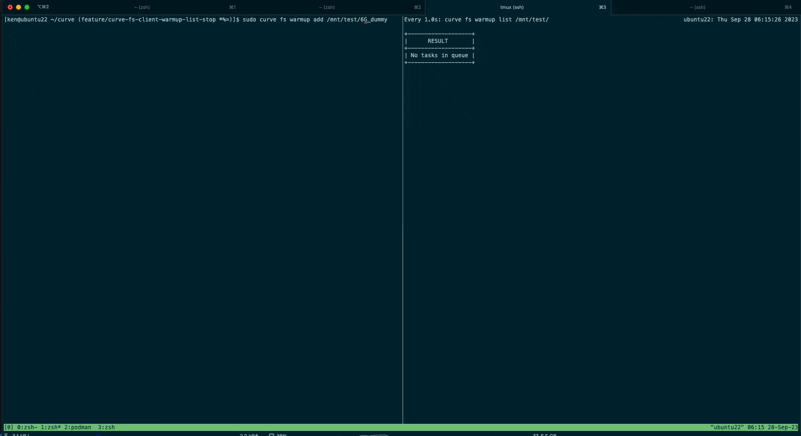
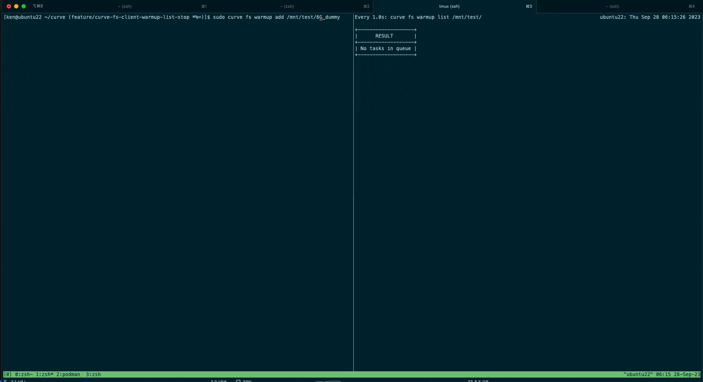
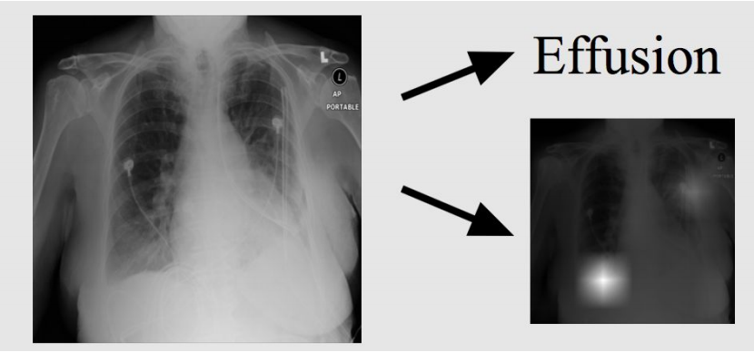

-
Curve (CNCF Open Source): Warmup List and Stop Interfaces.
[pull request]
[
C++|Go] 

With CurveFS and object storage like MinIO or AWS S3, our data is stored remotely.
Whenever we access a file in CurveFS, we have to fetch it from the remote platform.
This process involves network connections, file writing, and memory access, causing delays.
To reduce waiting times, the warmup tool lets users pre-fetch files they might need in advance, so these files are ready when required.
This feature includes three main parts:
1. Not overwriting the existing file list.
2. Providing an interface to cancel warmup jobs and their related tasks.
3. Offering an interface to list all ongoing warmup jobs for a specific file system.
By adding these features, we have given Curve users the ability to perform a wider range of actions and improved the reliability of file retrieval. -
Riot Games: Team Matchmaking System.
[
Java|Python|Spring]
Released on production: Riot News - MATCHMAKING AND CHAMPION SELECT
The image shows the off role parity rate significantly increasing (blue area) after (blue circle) I published the change to a particular region.
This feature aims to enhance the fairness of players' matches. In the past, players may get assigned to a position they are pretty bad at and play against another player who got his most confident position. To eliminate these perceivable disadvantaged, I redesigned the matching algorithms and bounded matches to be player-with-less-confident-position v.s. player-with-less-confident-position and player-with-most-confident-position v.s. player-with-most-confident-position. However, the new algorithm might bring some side effects that increase players' queue time. To minimize the side effect while keeping the benefits, I have experimented with over 2 million matches in the last year and determined the best version of the matching algorithm. The backend services used Java, Spring, and some internal frameworks. The simulation used Jave, Python, and Databricks to collect, aggregate, and analyze the data. -
Riot Games: League of Legends Client Application.
[
C++|Java|JavaScript|Ember.js]
This feature displays certain information to players when they choose certain positions. Although it looked like a simple front-end change, the most challenging part lies on the backend side. Since we have distributed almost all of our backend services to tons of different servers for load balance, like parties, lobbies, and matchmaking, there is a risk that players in the same lobby may not see the same information. To ensure consistency, freshness, and traffic-saving, I end ups storing the shared information in a Redis-like cache and retrieve the information from the source to refresh them periodically. The front end used Javascript, Ember.js, and C++ to manage front-end display and state. The backend services used Java, Spring, and some internal frameworks.
-
Jisell: A voluntary startup iOS app project.
[
Swift]
This iOS app aims to create a trendy gifting experience for clients with AR, blockchain, and object detection. I was responsible for developing multiple user interfaces and pipe logic in-between using Swift. This app was published on the app store and selected for VentureBridge Summer Cohort in 2022.
-
Course Project: Twitter Data Analysis.
[
Java|hadoop|kafka|samza]
Implemented a high performance, fault-tolerant web service on AWS EC2 clusters for 1TB Twitter data analysis with read queries and achieved over 25,000 RPS on a limited budget given to work upon. Processed 1TB raw data using Apache Spark and Scala to perform ETL and load data into MySQL database systems. Used Jooby framework and load balancer for front end. Employed backend using MySQL, improved performance by implementing several optimizations ranging from schema design, database parameter tuning, horizontal scaling, replication and sharding, and monitored performance using AWS CloudWatch to identify performance bottlenecks. Migrated the web service to use managed web services provided by Amazon in the final phase of the project.
-
Course Project: Uber-like ride request matching.
[
Java|hadoop|kafka|samza]
This project uses Kafka and Samza to process streaming uber-like events.
It matches each ride request to the nearest driver (real-time updated location) at the speed of 20000 rps. -
Course Project: Emergency Social Network.
[online demo]
[
ExpressJS|Webpack|Heroku|MongoDB|Jest]
This project is an application with a modern mobile web app interface.
It provides multiple functionalities helping users under emergency circumstances, such as real-time public/private/group chat, announcements, searching, emergency disaster-related features.
It is worth noting that the project required not to use any modern front-end framework, so we developed the front-end framework ourselves, applying several design patterns. -
Houzz: Website Performance Monitoring Service.
[
ReactJS|ExpressJS|JavaScript|k8s/Job|Docker|MongoDB]
This project is a site speed monitoring platform based on google’s lighthouse library, and it is mainly composed of two components: dashboard and monitoring daemon.
React.js and Node.js build the dashboard for its frontend & backend functionality.
The monitoring daemon is a 24/7 service monitoring hundreds of website quality metrics modularized by Docker and k8s Job. -
Trend Micro: Virtual Machine Configuration Tool.
[download]
[
C++|C#|VBScript|Shell script]
A GUI wizard application guides users to build sandboxed virtual machines. My recent delivery feature of that application supports users’ ability to create Linux sandboxed virtual machines. I used C# and Shell Script to enable the wizard application to set up an imported virtual machine automatically, install the required packages, and optimize the sandboxed virtual machine environment. This feature provides users a better chance to detect viruses by providing more sandboxed virtual machine options; now, over 34% of the existing sandboxed virtual machines are Linux-based. -
Trend Micro: Virus Analyze Integration Core Module.
[
Python|C++|Shell]
I responsible for handling the preprocess procedure when file samples were sent to the system to scan for viruses. One of the features I developed supports decompressing a compressed EGG-format file sample, which is mainly used in Korea. I used C++ to refactor the open-source project and integrate it into the current system’s existing procedure. -
Diseases Detection in X-Ray images.
[report]
[code]
[
Python|VGG19|Grad Cam]In the capstone project of "Applied Deep learning," I developed a model to detect diseases in x-ray images by using a pre-trained VGG19 model and Grad-CAM to highlight bounding boxes. I assumed that the area, which CNN pays particular attention to while doing classification, should be the lesion's location. I used resampling, weighted loss function, and data augmentation to mitigate data imbalance problem. -
Pedestrians Detection Project.
[details]
[
Python|JavaScript|Mask RCNN]This project was my internship's capstone project at China Unicom, aiming to detect customer amount using real-time videos. I implemented the model with the state of art model: Mask-RCNN and significantly improved the accuracy performance. Also, I developed an online annotation tool to help users annotate ground truth images and generate JSON format output.

-
Quora-liked Forum.
[code][online demo]
[
Python|React.js|Django|WebSocket|Redis|Nginx]
This project aimed to build a forum site like Quora. I Implemented an interactive interface by using React and Redux and the asynchronous AJAX framework Axios. I also created sustainable real-time notifications and instant messaging with WebSocket Reconnecting and Django Channels. I built the API in RESTful format with Django REST framework and MySQL, enabling common CRUD operations. Last, I deployed the website’s frontend and backend on Google Cloud Platform using Nginx to redirect requests. -
Fintech Contest - Spendings Tracking Chat Bot.
[model]
[code]
[
Python|Vue.js|Word2Vec|RNN]
In the FinTech Hackathon 2017, a financial technology competition in Taiwan, my team received “The Best Team” award for our project customizing Artificial Accounts (Chatbot) which helps keep track of people’s daily expenditures. I used Word2vec from Google’s open source neural net to connect the words inputted by the user in meaningful ways and also VueJS Frameworks to create a web app which could help visualize and analyze people’s spending. For future work, the model structure will be extended to Natural Language Processing by Recurrent Neural Network (RNN). -
Student Information System.
[
Node.js|Vue.js|Electron]
This project aimed to allow the NTU GMBA Office to easily handle administrative tasks, such as entering student background information and academic performances. The features I designed, such as an interactive graph, allows the staff to access data much more conveniently by, for example, selecting a certain age to produce a student career-outcome bar graph. I also developed a portable desktop application with Node.js and Electron, exempting users from installing additional environment dependencies. The application has reduced the GMBA Office’s information retrieval time by 80%. -
Translator from C to Assembly.
[code]
[
Java]This project was my final project for the class System Programming. I created the function of translating C code into ASM code using Java. -
Web App for an online forum.
[code][online demo]
[
Vue.js|JavaScript|HTML5]
This project aimed to build a mobile web app for an existing forum API. I used pure JavaScript and CSS to mimic some sliding special effects and built the data handling logic using Vue.js -
TexasHoldem Game.
[code][online demo]
[
JavaScript|Vue.js|HTML5]
I developed this project to study Vue.js framework and CSS. -
Base Conversion Game.
[code][online demo]
[
JavaScript|HTML5]
I developed a simple web app game to help me practice binary conversion. The UI and gaming style referred to 2048 and other QA games. BTW, this project really helps! -
Item Borrowing System.
[code]
[
PHP|JavaScript]
This project aimed to replace a paper-based item borrowing service with an automatic web service. I used PHP to transfer data and implement the borrowing and stocking logics. I constructed the frontend pages with JavaScript, CSS, and Bootstrap. -
Website Crawler.
[code]
[
Python|BeautifulSoup]
This project aimed to help a professor parse a website’s salary data. I used the Python and Beautiful Soup libraries to parse millions of data. I also designed fault-tolerated checking to prevent program crashes due to unstable network connections.